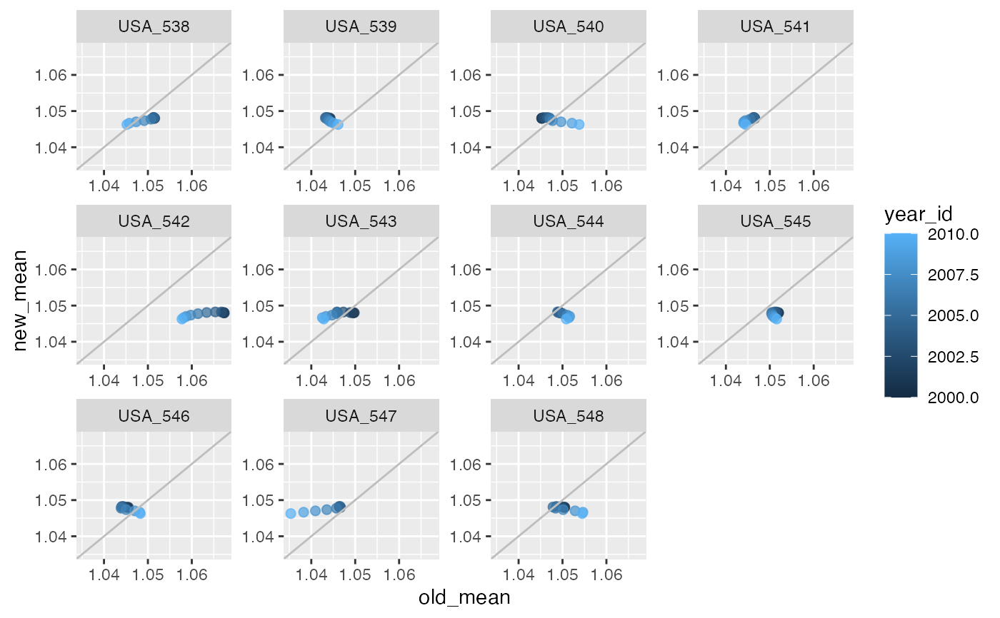

This function can be used to visualize the results of the rank_change function, or to otherwise compare values from two different model versions or sets of estimates. This can help streamline the vetting process. All characteristics for each estimate should be matched, e.g. year, location, age. Plot_scatter creates scatter plots comparing the two sets of results. The various options for faceting or coloring the points allow the user to customize the plot to maximize utility.
plot_scatter( data, x_var, y_var, facet_x, facet_y = NULL, color_pt = NULL, pt_size = 1, title = NULL, facet_type = "none", fix_scale = FALSE )
| data | data.frame or data.table. Data to plot comparing two sets of estimates, e.g. output of rank_change function. Required! |
|---|---|
| x_var |
|
| y_var |
|
| facet_x |
|
| facet_y |
|
| color_pt |
|
| pt_size |
|
| title |
|
| facet_type |
|
| fix_scale |
|
A ggplot object
plot_scatter(trend_changes_USA, x_var = "old_mean", y_var = "new_mean", facet_x = "ihme_loc_id", pt_size = 2, facet_type = "wrap", fix_scale = TRUE, color_pt = "year_id")